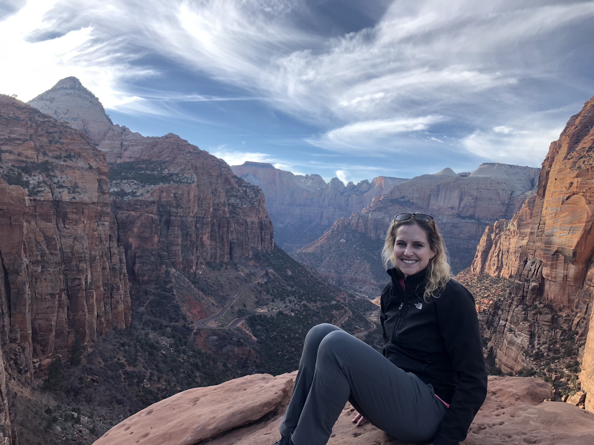
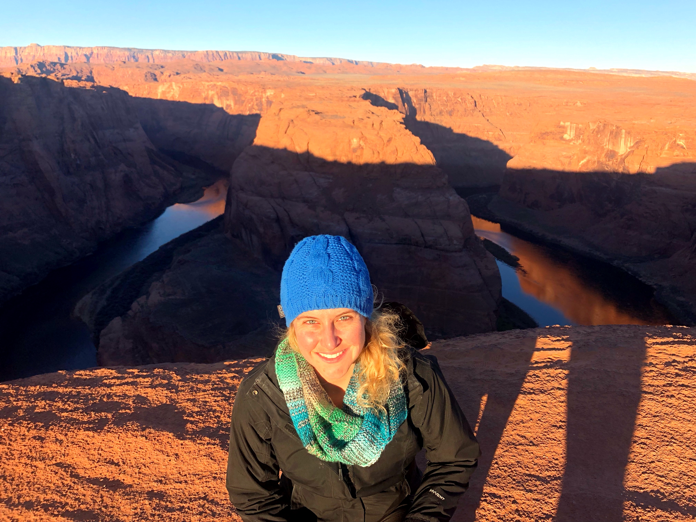
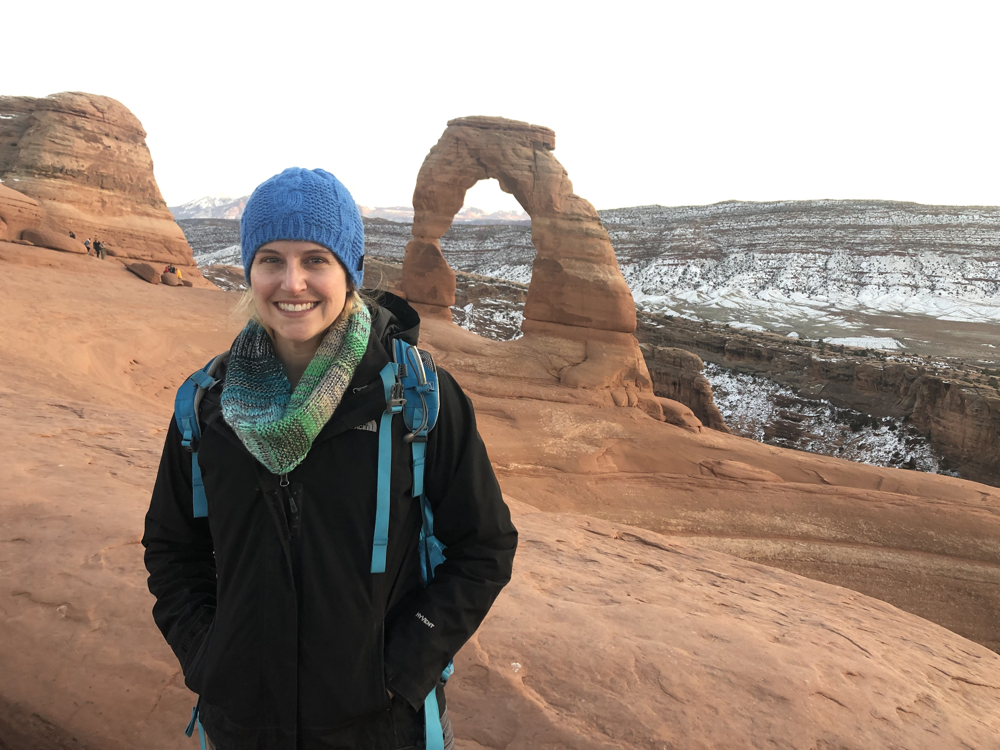
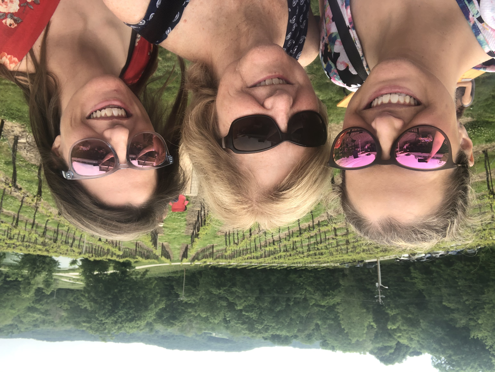

<!DOCTYPE html>
<html lang="en"></html>
<html>
    <head>
        <meta charset="utf-8">
        <meta name="viewport" content="width=device-width, initial-scale=1, shrink-to-fit=no">
        <link rel="stylesheet" href="https://stackpath.bootstrapcdn.com/bootstrap/4.5.0/css/bootstrap.min.css" integrity="sha384-9aIt2nRpC12Uk9gS9baDl411NQApFmC26EwAOH8WgZl5MYYxFfc+NcPb1dKGj7Sk" crossorigin="anonymous">
        <link rel="stylesheet" href ="styles.css">
        <title>Tell Me Something Good</title>
    </head>

    <body>
        <header>
            <h1 id ="title">My 2018 Road Trip</h1>
        
            <nav>
                <ul>
                    <li>
                        <svg width="1em" height="1em" viewBox="0 0 16 16" class="bi bi-chevron-right" fill="currentColor" xmlns="http://www.w3.org/2000/svg">
                            <path fill-rule="evenodd" d="M4.646 1.646a.5.5 0 0 1 .708 0l6 6a.5.5 0 0 1 0 .708l-6 6a.5.5 0 0 1-.708-.708L10.293 8 4.646 2.354a.5.5 0 0 1 0-.708z"/>
                          </svg>
                        <a href="#livinginsandiego">Living in San Diego</a>
                    </li>
                    <li>
                        <svg width="1em" height="1em" viewBox="0 0 16 16" class="bi bi-chevron-right" fill="currentColor" xmlns="http://www.w3.org/2000/svg">
                            <path fill-rule="evenodd" d="M4.646 1.646a.5.5 0 0 1 .708 0l6 6a.5.5 0 0 1 0 .708l-6 6a.5.5 0 0 1-.708-.708L10.293 8 4.646 2.354a.5.5 0 0 1 0-.708z"/>
                          </svg>
                        <a href ="#zion"> Zion National Park</a>
                    </li>
                    <li>
                        <svg width="1em" height="1em" viewBox="0 0 16 16" class="bi bi-chevron-right" fill="currentColor" xmlns="http://www.w3.org/2000/svg">
                            <path fill-rule="evenodd" d="M4.646 1.646a.5.5 0 0 1 .708 0l6 6a.5.5 0 0 1 0 .708l-6 6a.5.5 0 0 1-.708-.708L10.293 8 4.646 2.354a.5.5 0 0 1 0-.708z"/>
                          </svg>
                       <a href ="#monumentValley">Monument Valley</a>
                    </li>
                    <li>
                        <svg width="1em" height="1em" viewBox="0 0 16 16" class="bi bi-chevron-right" fill="currentColor" xmlns="http://www.w3.org/2000/svg">
                            <path fill-rule="evenodd" d="M4.646 1.646a.5.5 0 0 1 .708 0l6 6a.5.5 0 0 1 0 .708l-6 6a.5.5 0 0 1-.708-.708L10.293 8 4.646 2.354a.5.5 0 0 1 0-.708z"/>
                          </svg>
                        <a href ="#horseshoeBend"> Horseshoe Bend</a>
                    </li>
                    <li>
                        <svg width="1em" height="1em" viewBox="0 0 16 16" class="bi bi-chevron-right" fill="currentColor" xmlns="http://www.w3.org/2000/svg">
                            <path fill-rule="evenodd" d="M4.646 1.646a.5.5 0 0 1 .708 0l6 6a.5.5 0 0 1 0 .708l-6 6a.5.5 0 0 1-.708-.708L10.293 8 4.646 2.354a.5.5 0 0 1 0-.708z"/>
                          </svg>
                        <a href ="#arches"> Arches National Park</a>
                    </li>
                    <li>
                        <svg width="1em" height="1em" viewBox="0 0 16 16" class="bi bi-chevron-right" fill="currentColor" xmlns="http://www.w3.org/2000/svg">
                            <path fill-rule="evenodd" d="M4.646 1.646a.5.5 0 0 1 .708 0l6 6a.5.5 0 0 1 0 .708l-6 6a.5.5 0 0 1-.708-.708L10.293 8 4.646 2.354a.5.5 0 0 1 0-.708z"/>
                          </svg>
                        <a href ="#lifeinSouthernIllinois"> Life in Southern Illinois</a>
                    </li>
                </ul>
            </nav>
        </header>
        <main>
            <div id ="articleContainer">
            <article>  
                <section>
                    <a name ="livinginsandiego">
                        <h2>Living In San Diego</h2>
                    </a>
                    <p>I lived in San Diego from the fall of 2012 until December, 2018. I decided to move back to the Saint Louis area 
                        so that I could start a better career and be closer to family. I decided to make my move home a road trip. I traveled
                        by myself to a few different places.
                    </p>
                    <figure>    
                        
                        <figcaption>With some friends in San Diego</figcaption>
                    </figure>
                   
                </section>
                <section>
                    <a name ="zion">
                        <h2>Zion National Park, Utah </h2>
                    </a>
                    
                    <p>My first stop on my trip home was Zion National Park, which is located in Utah. I woke up at 4am and drove about 10 hours to 
                        get to the park before sunset and was able to go for a short hike before it got dark. I was disappointed that I didn't have 
                        more time to spend there. 
                    </p>
                    <figure>
                        
                        <figcaption>Canyon Overlook Trail</figcaption>
                    </figure>
                </section>
                <section>
                    <a name ="monumentValley">
                        <h2>Monument Valley</h2>
                    </a>
                    <p>Another one of my stops was Monument Valley. It is located on Navajo land, near the Utah-Arizona border. It has been featured in many westerns.
                     I spent a few hours driving around to see all of the different rock formations. After Monument Valley
                        I continued driving until I got to Page, Arizona.
                    </p>
                    <figure>
                        
                        <figcaption>Standing in front of West Mitten Butte, East Mitten Butte, and Merrick Butte</figcaption>
                    </figure>
                </section>
                <section>
                    <a name ="horseshoeBend">
                        <h2>Horseshoe Bend</h2>
                    </a>
                    <p>The next morning, I woke up early again to see the sunrise at Horseshoe Bend. There were signs everywhere warning visitors
                        to stay away from the dangerous cliff edges, but many tourists were in search of the &quot;perfect&quot; picture. I was just fine getting
                        a shot from within the signs.
                    </p>
                    <figure>
                        
                        <figcaption>Horseshoe Bend at Sunrise</figcaption>
                    </figure>
                </section>
                <section>
                    <a name ="arches">
                        <h2>Arches National Park</h2>
                    </a>
                    <p>My last exciting stop was Arches National Park, located in Utah. I drove around the park a little bit, but by that time
                        most things were closed due to the government shut down. I hiked Delicate Arch at sunset and managed to make it back to my car
                        in the dark. When I tried to leave the park, I came to a road closure--someone had accidentally driven into a steep ravine
                        and had to get towed out. I got stuck in the park! Once I was finally able to leave, I drove most of the night through the mountains
                        in Colorado. I finally stopped around 2am, and I woke up at 7am the next morning.
                        The next day was LONG. I drove over 12 hours to get back to Southern Illinois.
                    </p>
                    <figure>
                        
                        <figcaption>Delicate Arch Hike at Sunset </figcaption>
                    </figure>
                </section>
                <section>
                    <a name ="lifeinSouthernIllinois">
                        <h2>Life in Southern Illinois</h2>
                    </a>
                    <p>
                    Since I moved back to Southern Illinois, I have been able to spend more time with my immediate and extended family.
                    My career also feels like it's finally getting started. I worked for a little whle as a substitute teacher in a local school district since
                    I have a teaching background. I eventually got in touch with a contracting company and was offered a 3 month position at Clayco as a an IT 
                    Executive Assistant. I was later hired on full time as a Business Analyst. Additionally, I was finally accepted into the LaunchCode program!
                    I had been looking at the program while I was in San Diego, but I wasn't eligible until I moved back to the area.
                    </p>
                    <figure>
                        
                        <figcaption>At The Chandler Hill Winery in Defiance, MO with my mom and sister</figcaption>
                    </figure>
                </section>
            </article>
            </div>
        </main>
        <footer>
            <p>&copy; Katie Yarber</p>
        </footer>
        <script src="https://code.jquery.com/jquery-3.5.1.slim.min.js" integrity="sha384-DfXdz2htPH0lsSSs5nCTpuj/zy4C+OGpamoFVy38MVBnE+IbbVYUew+OrCXaRkfj" crossorigin="anonymous"></script>
        <script src="https://cdn.jsdelivr.net/npm/popper.js@1.16.0/dist/umd/popper.min.js" integrity="sha384-Q6E9RHvbIyZFJoft+2mJbHaEWldlvI9IOYy5n3zV9zzTtmI3UksdQRVvoxMfooAo" crossorigin="anonymous"></script>
        <script src="https://stackpath.bootstrapcdn.com/bootstrap/4.5.0/js/bootstrap.min.js" integrity="sha384-OgVRvuATP1z7JjHLkuOU7Xw704+h835Lr+6QL9UvYjZE3Ipu6Tp75j7Bh/kR0JKI" crossorigin="anonymous"></script>
    </body>
</html>